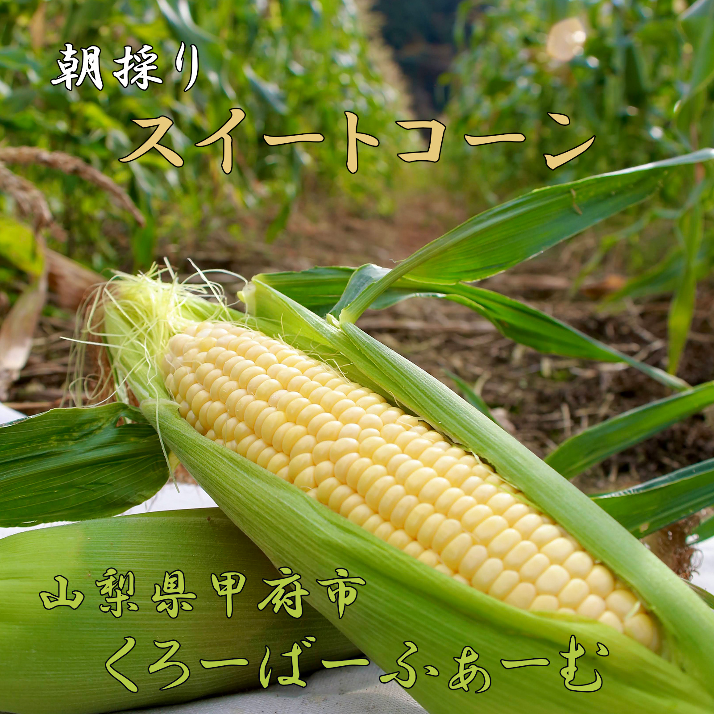
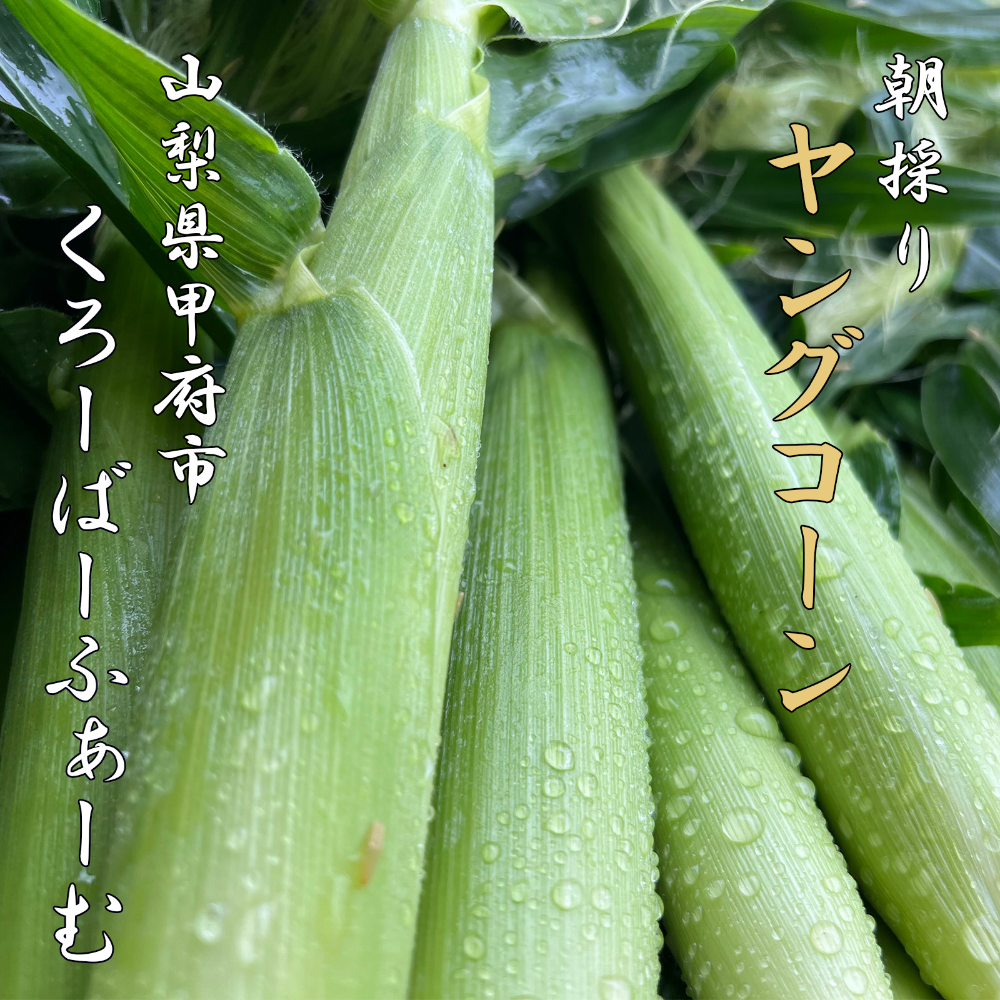
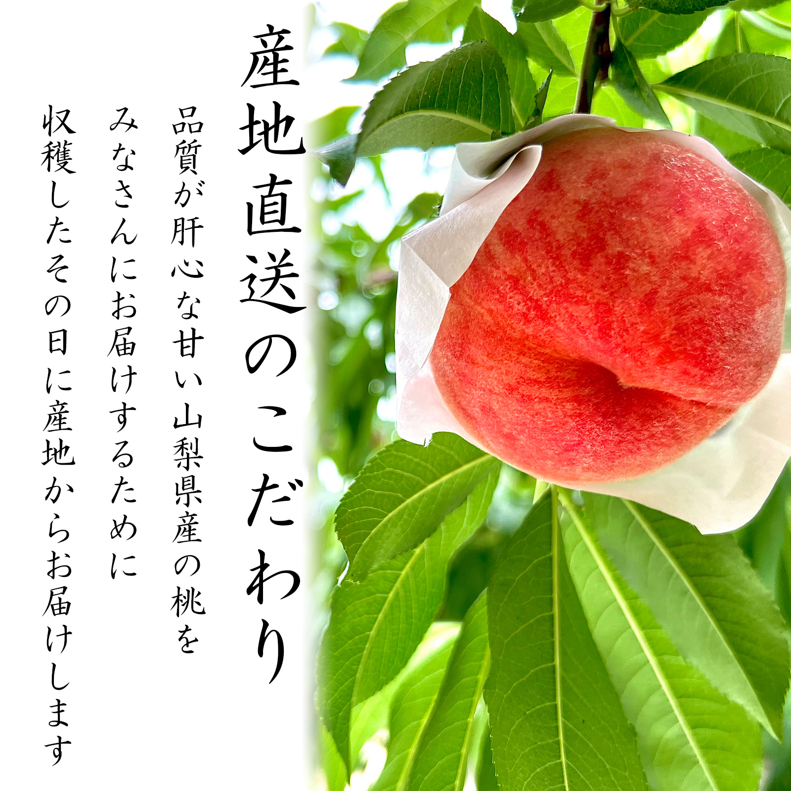
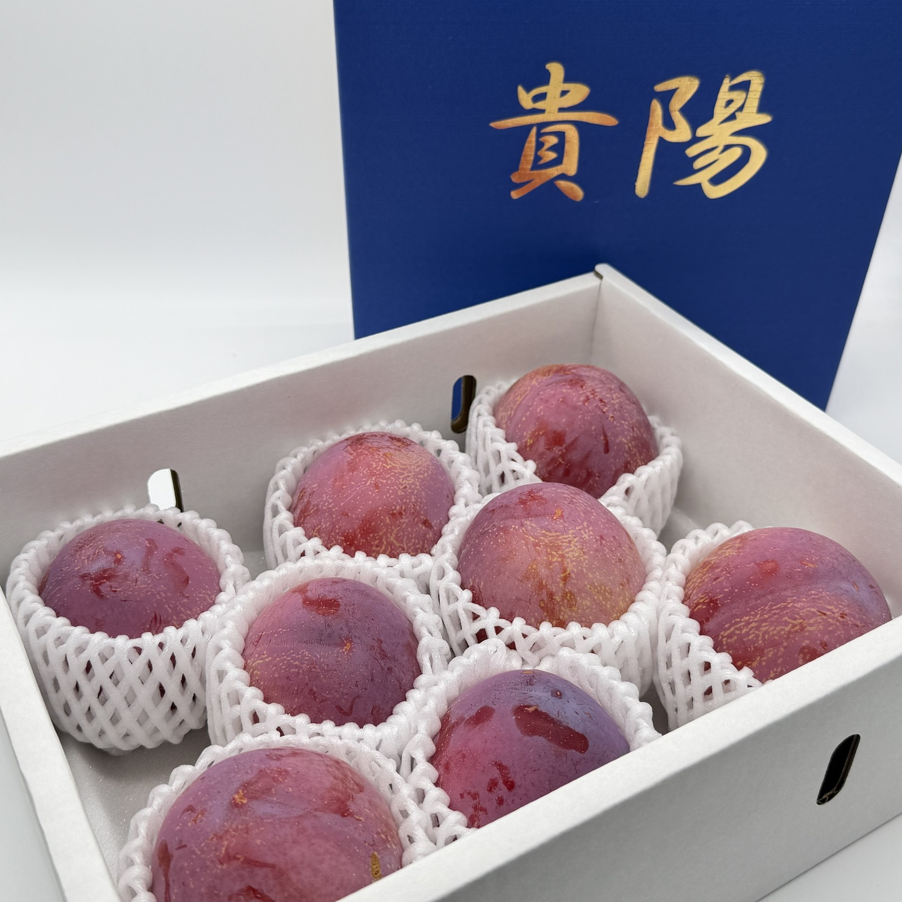
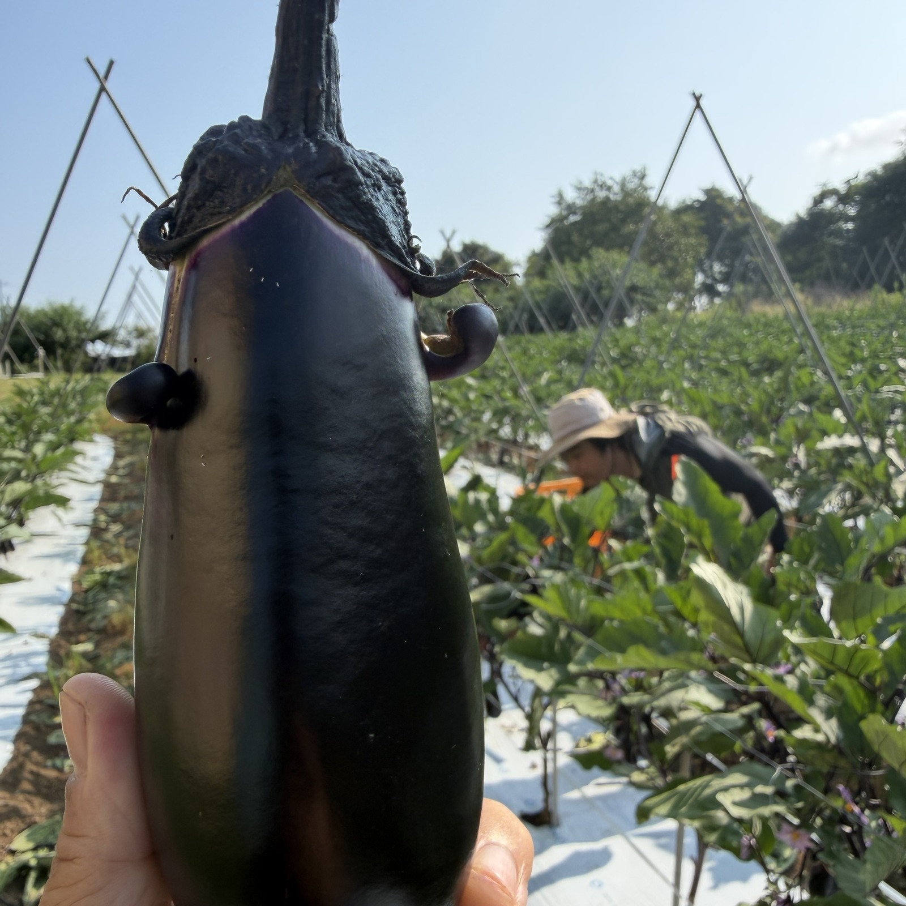

寒暖差が育む、甘さと香り
山梨・甲府盆地ならではの寒暖差が、抜群の甘さと香りを育てます。
Yamanashi, Kofu
山梨県甲府市から、旬を
【お届けします】
Our Story
ダッシュ村に憧れていた「まこと」が、縁あってこの甲府の地で農業をはじめました。
「いつかみんなで何かやりたいね」と話していた仲間たちが集まり、今の
くろーばーふぁーむ山梨のかたちになりました。
みんなで支えあいながら、旬の恵みを全国のみなさまへお届けしています。
“食べた瞬間、笑顔になる”
そんな感動体験をお届けしたくて。
Commitment
山梨・甲府盆地ならではの寒暖差が、抜群の甘さと香りを育てます。
朝採れの新鮮さそのままに、最短でお手元へお届けします。
品質第一。旬の「いま」を見極めて、一番おいしいタイミングで発送します。
栽培方針：地域の慣行栽培基準を守り、日々の管理を徹底しています。
Produce
旬にあわせて、生産物は順次追加していきます。写真も随時追加予定です。






